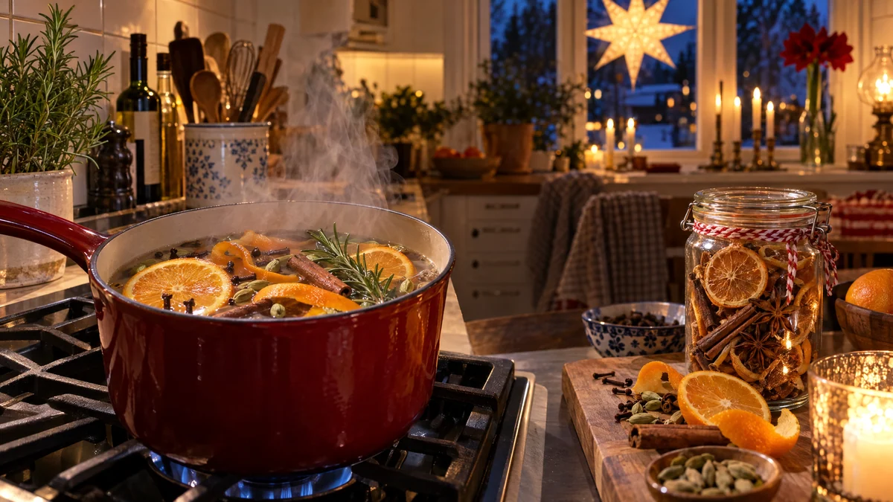

RESTFEST · HUSHÅLL & STÄD
Doftande kastrull med apelsinskal, kanel och nejlika
Apelsinskal, ett par kanelstänger och några nejlikor ur kryddhyllan sjuder i en kastrull vatten på spisen. På några minuter doftar hela hemmet som ett julbord, utan doftljus eller sprayer. Det billigaste och vackraste sättet att få hemmet att kännas varmt en mörk vinterkväll.
- Förberedelse
- 5 min
- Verkningstid
- så länge du vill
- Räcker till
- 1 kastrull, 2–3 gånger
- Nivå
- Nybörjare
Bra att veta. Märk alltid flaskor och burkar tydligt och förvara dem utom räckhåll för barn. Blanda aldrig hemgjorda rengöringsmedel med klorin eller andra köpta medel, ättika och klorin bildar en giftig gas.
 Det här behöver du
Det här behöver du
Tryck på + vid det du behöver köpa.
Gör så här
- Lägg apelsinskal, kryddor och rosmarin i en kastrull och häll över vattnet.
- Koka upp och sänk sedan till lägsta värme, så att vattnet bara ångar och sjuder svagt. Ha inget lock på.
- Fyll på med varmt vatten var 30:e minut, så att kastrullen aldrig kokar torr.
- Stäng av spisen när du lämnar köket eller går och lägger dig.
- Låt innehållet svalna, ställ det i kylen och återanvänd det 2–3 gånger. Fyll på med nytt vatten varje gång.
Presentation och användning
- Använd en vacker kastrull i emalj eller gjutjärn, så får den gärna stå framme på spisen.
- Fyll en glasburk med torkade apelsinskivor, kanelstänger, nejlikor och stjärnanis, och knyt på en lapp med instruktionen. Det blir en fin julklapp.
- Byt ut kryddorna efter säsong: äppelskal och kanel på hösten, citron och rosmarin på våren.
- Spara apelsinskalen i frysen, så har du alltid något att koka.
Bra att veta
- Låt aldrig kastrullen koka torr, den kan brännas och börja ryka.
- Lämna aldrig spisen påslagen utan tillsyn.
- Ställ kastrullen på en bakre platta om du har barn eller husdjur hemma.